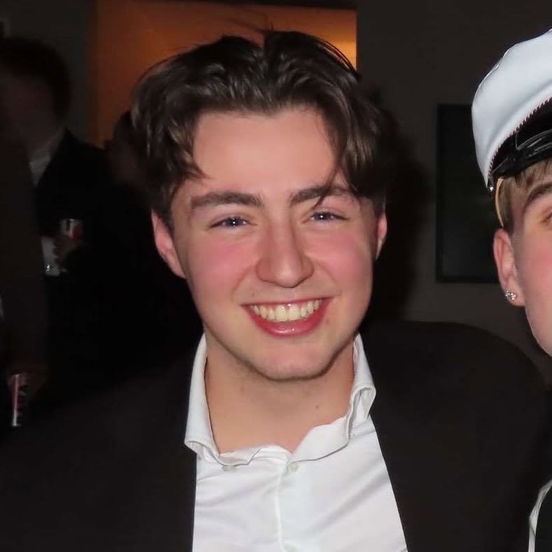

Leikstjóri & leikari
Hanna Álfheiður Gunnarsdóttir
Hanna er annar tveggja höfunda og leikstjóra Telpurnar. Verkið kannar samskipti, væntingar og valdahlutverk innan vinkonuhópa — með kímni sem afhjúpar það sem býr undir yfirborðinu.
Kvikmyndaplakat · 2026
Myndin
Þrjár vinkonur hittast eina kvöldstund. Á yfirborðinu er allt í himnalagi — en hver þeirra á sinn djöful að draga, og þegar líður á kvöldið koma þeir sífellt betur í ljós. Telpurnar er eftir Hönnu Álfheiði Gunnarsdóttur og Guðríði Jóhannsdóttur: fyndin en gagnrýnin sýn á vinkonuhópa, væntingar og valdahlutverk — þar sem mörkin milli skáldskapar og raunveruleika verða óljós.
Framleiðslumyndir
Leikstjórar
Leikstjóri & leikari
Hanna er annar tveggja höfunda og leikstjóra Telpurnar. Verkið kannar samskipti, væntingar og valdahlutverk innan vinkonuhópa — með kímni sem afhjúpar það sem býr undir yfirborðinu.
Leikstjóri & leikari
Guðríður er annar tveggja höfunda og leikstjóra Telpurnar. Hún og Hanna sækjast eftir sögum sem brjóta niður mörkin milli skáldskapar og raunveruleika — skondnar, ófyrirsjáanlegar og óþægilega kunnuglegar.
Leikari
[Þriðji leikari — staðfestist síðar]

Hrannar Þór
Framleitt af Hrannar Þór
Sýnishorn úr tónlist · endanleg útgáfa óákveðin